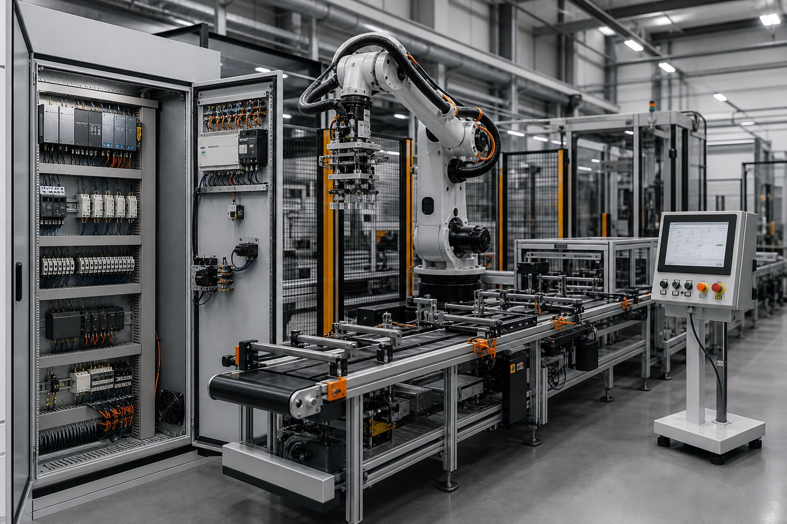

Wyzwanie
Dane o realizacji zleceń były przepisywane ręcznie z raportów zmianowych. Powodowało to opóźnienia, rozbieżności w stanach materiałowych i brak bieżącej informacji dla planowania.
Przykładowa realizacja / Integracja
Przykładowy opis wdrożenia automatycznej wymiany zleceń, statusów produkcji i zużycia materiałów pomiędzy halą a systemem biznesowym.

Dane o realizacji zleceń były przepisywane ręcznie z raportów zmianowych. Powodowało to opóźnienia, rozbieżności w stanach materiałowych i brak bieżącej informacji dla planowania.
Przygotowaliśmy warstwę integracyjną pobierającą zlecenia z ERP i przekazującą je do stanowisk produkcyjnych. Statusy, ilości oraz zużycia wracają automatycznie po przejściu kontroli poprawności.
Aktualny status produkcji jest dostępny bez ręcznego raportowania, a błędy przepisywania danych zostały ograniczone.
Materiał zastępczy
Przykładowa grafika do późniejszej wymiany.